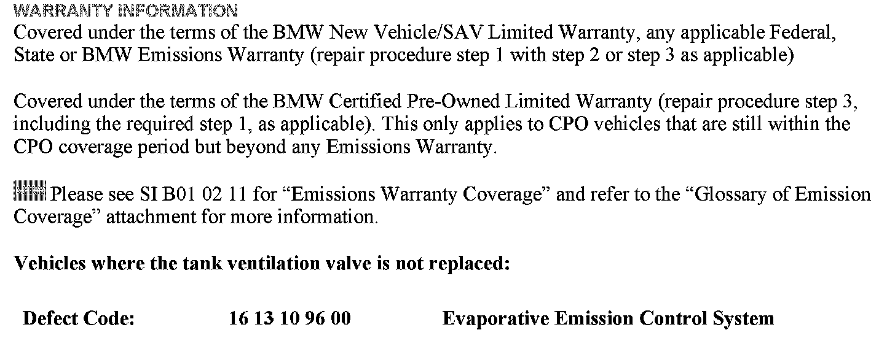
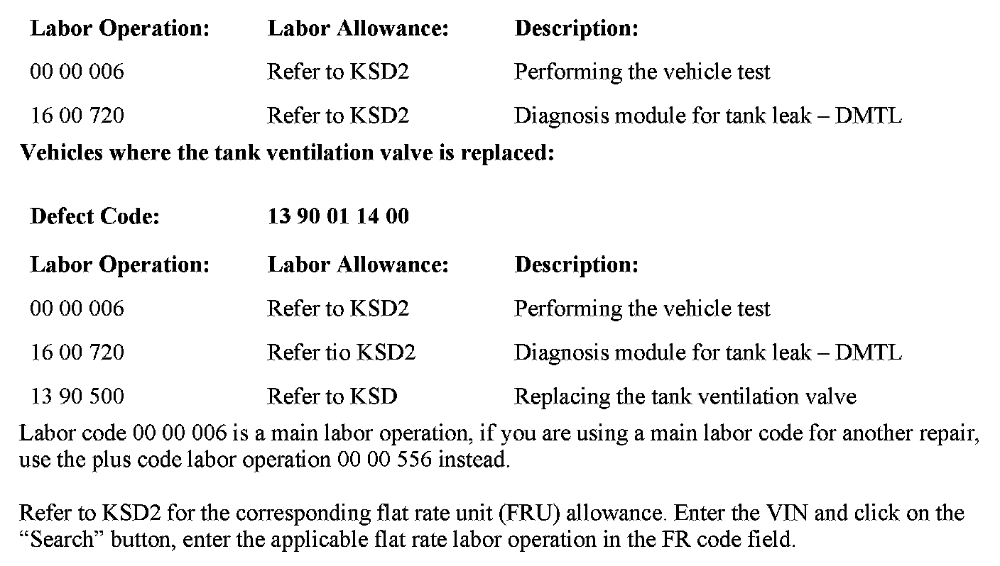
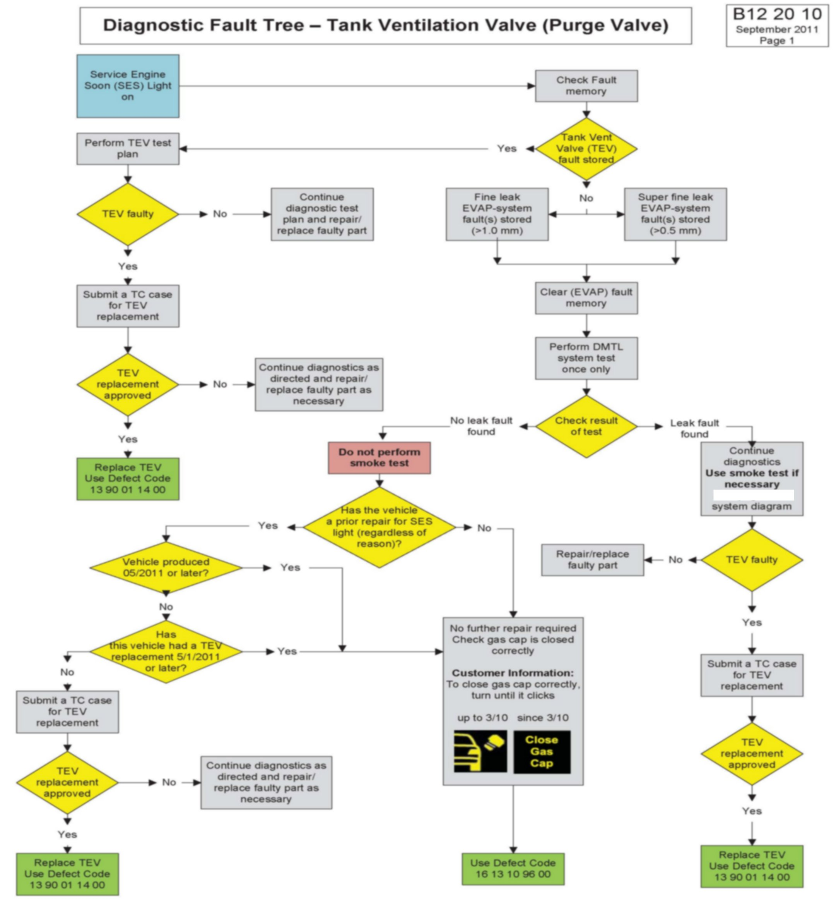
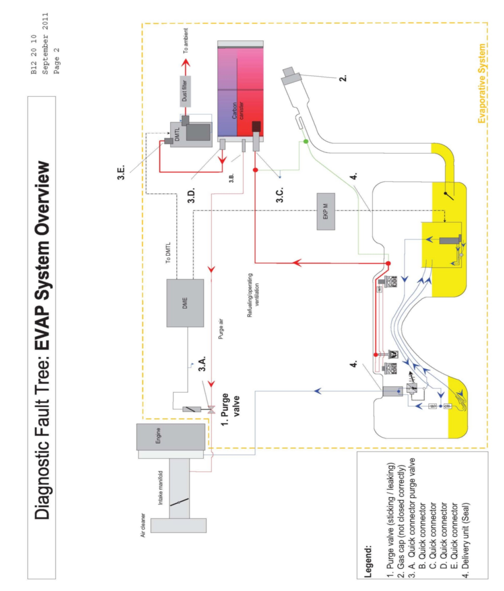

Fuel System - MIL ON Or Check Gas Cap Is Illuminated
SI B12 20 10Engine Electrical Systems
January 2012
Technical Service
This Service Information bulletin supersedes SI B12 20 10 dated September 2011.
[NEW] designates changes to this revision
SUBJECT
Service Engine Soon Lamp or Check Gas Cap Is Illuminated
MODEL
E82 and E88 (1 Series) N51, N52K, N54, N54T and N55 engines up to 5/2011 production
E90, E91, E92 and E93 (3 Series) with N51, N52, N52K, N54, N54T and N55 engines production up to 5/2011 production
E60 and E61 (5 Series) with N52, N52K and N54 engines all production
E70 and E72 (X5 and X5 M) with N52K, N55, N63 and S63 engines up to 5/2011 production
E71 (X6) with N54, N55, N63 and S63 engines up to 5/2011 production
E83 (X3) with N52K engine up to 5/2011 production
E85 and E86 (Z4) with N52K engine up to 5/2011 production
E89 (Z4) with N52K, N54 and N54T engines up to 5/2011 production
F01, F02 and F04 (7 Series) with N54 and N63 engines up to 5/2011 production
F07 (5 Series Gran Turismo) with N55 and N63 engines up to 5/2011 production
F10 (5 Series) with N52T, N55 and N63 engines up to 5/2011 production
F12 and F13 (6 Series) with N63 engine up to 5/2011 production
F25 (X3) with N52T and N55 engines up to 5/2011 production
SITUATION
The customer states that the Service Engine Soon lamp is illuminated. When diagnosed, one of the following faults is stored in the DME fault memory:
^ DMTL Tank Leakage: Fine leak fault codes 3140, 321C, 2A15, 2B25, 190200, 190201
^ DMTL Tank Leakage: Super fine leak fault codes 3141, 321D, 2A16, 2A14, 2B28, 190300, 190302
CAUSE
Incorrectly installed fuel cap, evaporative system leakage or tank ventilation valve (TEV) that has been jammed open.
PROCEDURE
1. For all vehicles outlined above, perform the applicable test plan diagnosis module for the tank leak DMTL, and follow the attached diagnostic fault tree for the fault(s) stored.
If a leakage is found, continue following the test plan to find the resolution. Refer to SI B16 01 07 for troubleshooting procedures, using the VACUTEC(R) Smoke Machine 625-522B-BMW.
2. If no tank leakage is found using the applicable test plan and the attached diagnostic fault tree, then review the vehicle history. If this is the first time for this complaint and the vehicle history does not indicate a single instance of the Service Engine Soon (SES) lamp illumination in the past for any complaint, then:
Do not replace any parts and do not initiate a smoke test of the evaporative system.
Confirm the operation of the fuel cap and advise the customer of the importance of installing the fuel cap properly to avoid tank leakage faults (see attached diagnostic fault tree for additional customer information).
If the vehicle has had the Service Engine Soon lamp illuminated in the past and no tank leakage is currently present using the applicable test plan, proceed to step 3.
3. Replace the tank ventilation valve only if the vehicle was produced prior to 5/2011 and the tank ventilation valve has not already been replaced since 5/2011. Refer to REP 13 90 500 for replacement procedures.
[NEW] Note:
TeileClearing authorization is no longer required for the tank ventilation valve replacement procedure described in this bulletin.
PARTS INFORMATION FOR REPEAT VISIT ONLY
Refer to the current version of EPC for the latest available replacement tank ventilation valve part number.


WARRANTY INFORMATION
ATTACHMENTS

Diagnostic Fault Tree - Tank Ventilation Valve (Purge Valve)

Diagnostic Fault Tree: EVAP System Overview